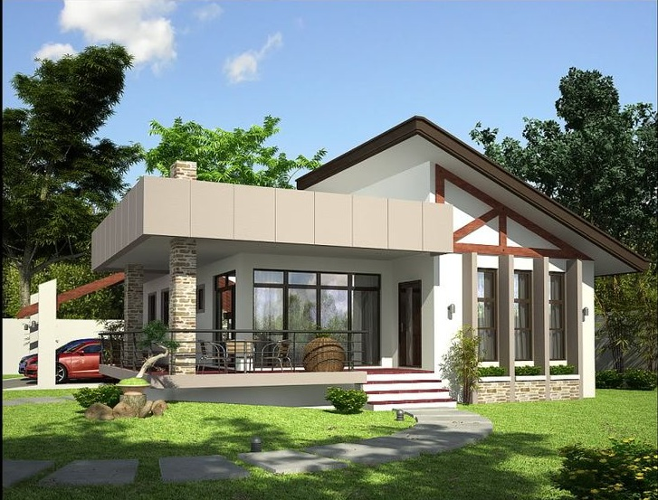

TentangAku.com - Next 10 Year
Next 10 Year
aku lahir tahun 2004, yang berarti umurku sekarang 16 tahun, namun bagaimana jika aku mencoba membayangkan apa yang akan terjadi 10 tahun kedepan?
"minggu 20 juli 2030, sekarang ini aku sedang duduk bersantai di halaman rumahku ditemani oleh suara percikan air mancur yang berasal dari kolam ikanku, tidak terasa sudah 10 tahun berlalu semenjak pandemi virus corona berakhir.
sebenarnya aku juga hampir tidak percaya dengan penemuan vaksin virus corona, namun vaksin tersebut memang benar adanya.
semenjak vaksin tersebut ditemukan dan di komersialkan, kasus virus corona di seluruh dunia pun langsung menurun drastis.
aku juga sangat bersyukur bisa melewati pandemi mengerikan tersebut, dan sekarang aku bekerja di Badan Intelejen Nasional.
dan juga aku memiliki komputer dengan spesidikasi tinggi untuk menambang bitcoin, bisa dibilang aku sudah cukup bahagia sekarang.
begitu pula dengan kendaraan impianku, mereka juga sudah terparkir dengan rapi di garasi."

 mungkin sekian sedikit cerita impianku di masa depan, terimakasih karena sudah membaca artikel ini, bila anda tertarik dengan artikel lainnya silahkan klik link dibawah, terimakasih.
mungkin sekian sedikit cerita impianku di masa depan, terimakasih karena sudah membaca artikel ini, bila anda tertarik dengan artikel lainnya silahkan klik link dibawah, terimakasih.
Top